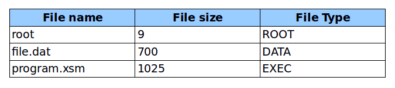

eXpOS assumes that the disk is a sequence of blocks, where each block can store a sequence of words.The number of words in a block is hardware dependent.Generally, the hardware comes with machine instructions to transfer a block from the disk to a contiguous space in memory and back.
The eXpFS logical file system provides a file abstraction that allows application programs to think of each data (or executable) file stored in the disk as a continuous stream of data (or machine instructions) without having to worry about the details of disk block allocation.Thus eXpFS hides the details of physical storage from application programs. eXpOS provides a sequence of file system calls through which application programs can create/read/write files.These system calls are OS routines that does the translation of the user request into physical disk block operations.
In addition to the eXpOS system call interface, the eXpFS specification also requires that there is an external interface through which executable and data files can be loaded into the file system externally. The details of the external interface are implementation specific. The link describes the external interface for eXpOS implementation on the XSM machine. (LINK TO eXpFS INTERFACE DOCUMENTATION HERE)
In this section we discuss the abstract logical view provided by eXpFS to the eXpOS application programmer.
The eXpFS logical file system comprises of files organized in a single directory called the root. The root is also treated conceptually as a file. As noted already, Every eXpFS file is a sequence of words. Associated with each eXpFS file there are three attributes - name, size and type, each attribute being one word long. The filename must be a string. Each file must have a unique name. The size of the file will be the total number of words stored in the file. (The maximum size of a file is operating system dependent). There are three types of eXpFS files -the root, data files and executable files. Each file in eXpFS has an entry in the root called the root entry. The various file types and file operations are described below:
The root file has name root and contains the meta-data about the files stored in the file system. For each file stored in eXpFS, the root stores three words of information – filename, file-size and file-type. This triple is called the root entry for the file. The first root entry is for the root itself. The order in which the remaining entries appear is not specified and can vary with the implementation. (The maximum size of the root file is defined by XFS_ROOTSIZE.). Example: If the file system stores two files – a data file, file.dat, of size 700 words and an executable file, program.xsm, of 1025 words, the root file will contain the following information assuming block size of 512. The operations on the root file: Open, Close, Read and Seek. Since the operations on the root file is a subset of the operations on data files, with the same syntax and semantics, these operations are discussed together with other operations on data files.
A data file is a sequence of words. The maximum number of words permissible in a file is defined by the constant XFS_DATASIZE. (It is a recommended programming convention to use the extension ".dat" for data files.) eXpFS treats every file other than root and executable files (will be described later) as a data file. The Create system call automatically sets the file type field in the root entry for any file created through the open system call to DATA (.dat). XOS allows an application program to perform the following operations (by invoking appropriate system calls) on data files: Create, Delete, Open, Close, FLock, FUnlock, Read, Write, Seek. Application programs can create only data files using the create system call. In addition to this, data files may be loaded into the eXpFS file system using the external interface. In addition to the above, the description of the operations FLock and FUnlock are discussed in Section 5. A detailed specification of the file system calls is given in {LINK- System call}.
These contain executable code for programs that can be loaded and run by the operating system. From the point of view of the eXpFS file system alone, executable files are just like data files except that file type EXEC in the root file entry. eXpFS specification does not allow executable files to be created by application programs. They can only be created externally and loaded using the external interface. However, application programs can read or modify executable files like data files.
Executable files are essentially program files that must be loaded and run by the operating system. Hence the Operating system imposes certain structure on these files (called the executable file format). Moreover, the instructions must execute on the machine on which the OS is running. Thus, there is dependency on the hardware as well. Typically, an application program written in a high level language (like APL - LINK TO APL SPECIFICATION) is compiled using a compiler that generates the executable file. The compiler generates executable file that is dependent on the operating system as well the target machine.
An OS implementation on a particular machine specifies an application binary interface (ABI). The ABI defines the following:
The eXpOS ABI for XSM machine is specified in {LINK ABI DOCUMENTATION}
Important Note: Application programs are typically written in a high level language like APL. A high level language implementation for an OS comes with an Application Programmers Interface (API) for the OS system calls. This document describes the library functions which the application programs must invoke for each operating system call. The compiler will translate the library call to corresponding low level interrupt calls as specified in the ABI. Thus, application programmers need to know only API. A description of the APL programming language together with its eXpOS API can be found in LINK. The APL compiler for eXpOS running on the XSM machine generates target code based on the ABI specification for eXpOS on XSM. Thus the ABI becomes the most important document for the compiler back end design.
The executable file format recognized by eXpOS is called the Experimental executable file (XEXE) format. In this format, an executable file is divided into three sections. The first section is called header, the second section called the code (or text) section and third called the (static) data section. The code section contains the program instructions. The data section contains the static data. The header section contains information like the size of the text and data segments in the file, the space to be allocated for stack and heap areas when the program is loaded for execution etc. This information is used by the OS loader to map the file into a virtual address space and create a process in memory for executing the program.
An application program can read/modify an executable file like a data file using the standard system calls on data files. In addition to this, the exec system call invokes the eXpOS loader that loads an executable file in correct XEXE format into memory for execution.